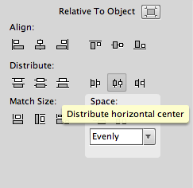
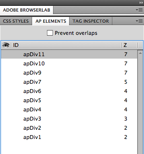

Homepage creation
Hi-fi wireframes:

1. Drop-down bar with video being the "Call to action"

2. Menu and video side by side

3. Intro and Menu show up first, video pops up later

4. Intro and huge menu in the center of the website
Hi-fi wireframe of chosen design:

Feedback from chosen wireframe:
- Layout is neat but should include buttons that address most common problems e.g. how to change the login password
- Likes the idea of minimalistic but not sure if would appeal to middle school students
Storyboard:

I went on to create a demo of the chosen storyboard on Fireworks and Dreamweaver.
Homepages
The strengths of using Fireworks
Easier for images
- Different layers can be hidden, locked for easy editing
- Prototyping: can slice different sections up as seen on a website; but if there are any
modifications after slicing, the slicing needs to be redone
- Different components of the website can be saved separately
- Can crop/resize/edit images on the same software in the photo's respective file rather than
going back to Fireworks if this process needs to be done when using Dreamweaver

- Better for coordinating the layout of the whole page (spacing/alignment)

The strengths of using Dreamweaver
Easier for CSS/styling
- Allows users to drag images directly from the list of files in the folder on the side
- Systematic approach to arrange the layers of AP elements: "Z-value"

- Can change CSS altogether as a class/tag/div using RULE: all titles had the same properties by
adding the same rule to each AP div

- Semi-automatically writes codes for you
- Editable code on the side - Split screen mode --> makes it easier to effect changes
Research:
Reference website on layout: Calimex
Layout
Java Scripts:
Spinning ray http://davidwalsh.name/css-spin-revisited
Whilst designing ...
Contrast
Repetition
Alignment
Proximity/Pattern
Summary of 2nd client meeting:
We met with Ms Smith and she liked the general direction of our website's purpose/layout.
We showed her 2 sites - one as a template (AIS-themed), which could be up and running; another being
more engaging (Superhero-themed) but still needs a lot more editing.
However, she felt that it was important to gather the information we would put onto the site.